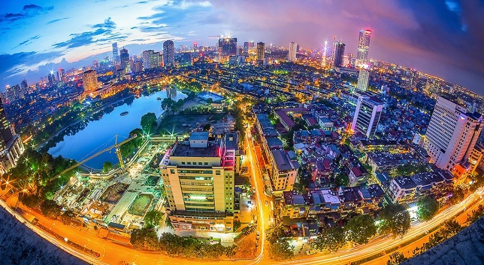

Tóm tắt về Hà Nội
Hà Nội là thủ đô của nước Cộng hòa Xã hội chủ nghĩa Việt Nam, cũng là kinh đô của hầu hết các vương triều phong kiến tại Việt Nam trước đây. Do đó, lịch sử Hà Nội gắn liền với sự thăng trầm của lịch sử Việt Nam qua các thời kỳ. Hà Nội là thành phố trực thuộc trung ương và là thành phố có diện tích lớn nhất cả nước từ khi tỉnh Hà Tây sáp nhập vào, đồng thời cũng là địa phương đứng thứ hai về dân số với hơn 8 triệu người (năm 2019). Tuy nhiên, nếu tính những người cư trú không đăng ký thì dân số thực tế của thành phố này năm 2019 là gần 10 triệu người. Mật độ dân số của Hà Nội là 2.398 người/km², mật độ giao thông là 105,2 xe/km² mặt đường. Hiện nay, Hà Nội là một đô thị loại đặc biệt của Việt Nam.
Hà Nội nằm giữa đồng bằng sông Hồng trù phú, nơi đây đã sớm trở thành một trung tâm chính trị, kinh tế và văn hóa ngay từ những buổi đầu của lịch sử Việt Nam. Năm 1010, vua Lý Thái Tổ, vị hoàng đế đầu tiên của nhà Lý, quyết định xây dựng kinh đô mới ở vùng đất này với cái tên Thăng Long. Trong suốt thời kỳ của các triều đại Lý, Trần, Lê, Mạc, kinh thành Thăng Long là trung tâm văn hóa, giáo dục và buôn bán của cả nước. Khi Tây Sơn rồi nhà Nguyễn lên nắm quyền trị vì, kinh đô được chuyển về Huế và Thăng Long bắt đầu mang tên Hà Nội từ năm 1831, dưới thời vua Minh Mạng. Năm 1902, Hà Nội trở thành thủ đô của Liên bang Đông Dương và được người Pháp xây dựng, quy hoạch lại, được mệnh danh là Tiểu Paris phương Đông thời bấy giờ. Trong thời kỳ chiến tranh Việt Nam, Hà Nội là thủ đô của Việt Nam Dân chủ Cộng hòa và sau khi thống nhất tiếp tục là thủ đô của nước Cộng hòa Xã hội chủ nghĩa Việt Nam hiện nay. Đó là thủ đô của Đông Dương thuộc Pháp 1887-1946 và của miền Bắc Việt Nam 1954-1976 trước khi thống nhất miền Bắc và miền Nam Việt Nam. Hiện nay, Hà Nội và Thành phố Hồ Chí Minh là hai trung tâm kinh tế - xã hội đặc biệt quan trọng của Việt Nam. Hà Nội được UNESCO trao tặng danh hiệu “Thành phố vì hòa bình” vào ngày 16 tháng 7 năm 1999.